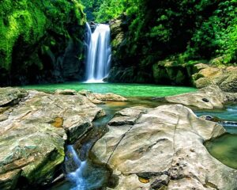
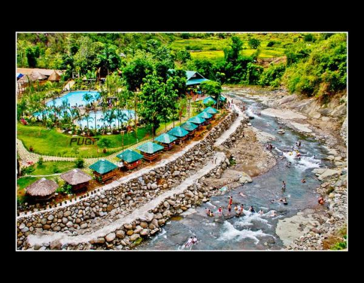
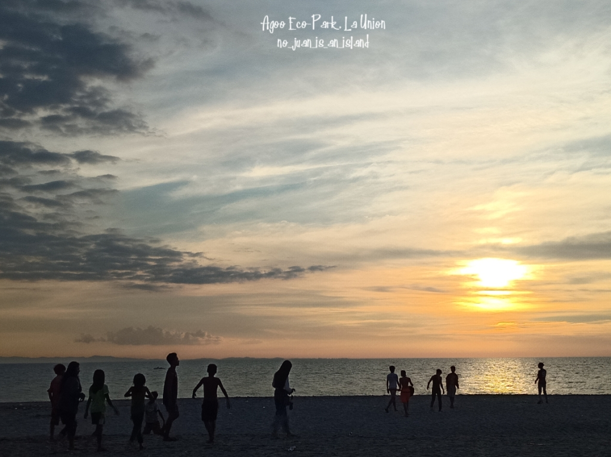
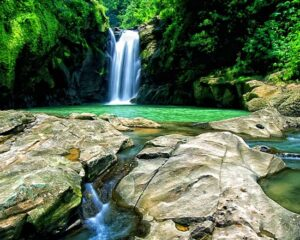
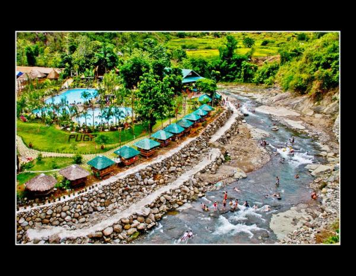
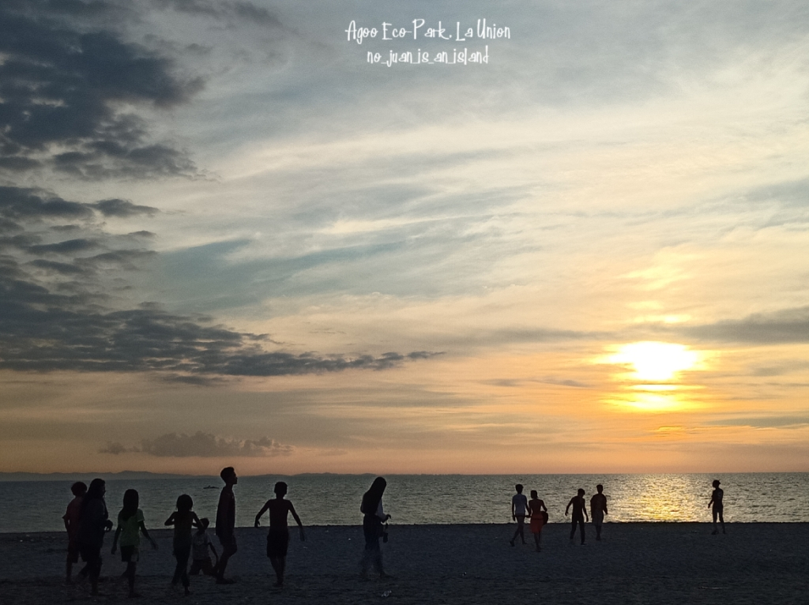

Explore Elyu (La Union)
Explore the chill surf beach vibe and other tourist spots in La Union, one of the favorite quick weekend destinations of young Metro Manila dwellers. This laid-back coastal town is famous for its surfing spots but what not a lot of people know is that it’s also brimming with other natural and heritage attractions and cultural activities like red clay pottery, grape picking, loom weaving, churches for pilgrimage tours, waterfalls, and eco-tours. Discover what else La Union has to offer and stay for more than a quick weekend.
La Union's OVERVIEW
La Union is known in its famous for the beach town of San Juan, the surfing capital of Luzon's west coast. There is more to experience in this laidback province beyond its beautiful waves as well, including stunning natural sites, heritage attractions, and an exciting food scene. Tourism industry is one of the areas generally impacted by the Covid-19 pandemic, affecting economies, livelihoods, public administrations and openings on all main lands. All pieces of its immense worth chain have been impacted.
La Union is famous for the beach town of San Juan, the surfing capital of Luzon’s west coast. There is more to experience in this laidback province beyond its beautiful waves as well, including stunning natural sites, heritage attractions, and an exciting food scene. Truly, La Union is a great place to explore for surfers and non-surfers alike! Because of its location near Manila, La Union is a popular weekend getaway for travelers coming from the metro. You can experience a lot even on a short trip. It’s easy to travel in and around the province as most towns are conveniently located along the coastal highway.